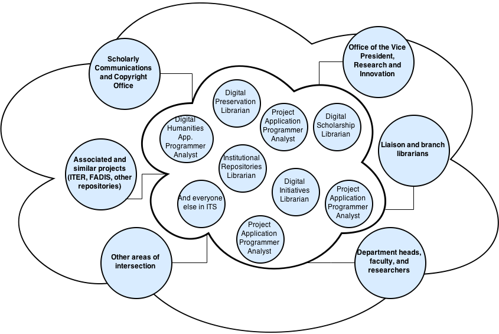

<!doctype html>
<html lang="en">

	<head>
		<meta charset="utf-8">

		<title>Supporting Institutional Repositories at the University of Toronto Libraries</title>

		<meta name="description" content="Supporting Institutional Repositories at the University of Toronto Libraries">
		<meta name="author" content="Sara Allain">

		<meta name="apple-mobile-web-app-capable" content="yes" />
		<meta name="apple-mobile-web-app-status-bar-style" content="black-translucent" />

		<meta name="viewport" content="width=device-width, initial-scale=1.0, maximum-scale=1.0, user-scalable=no">

		<base target="_blank">

		<link rel="stylesheet" href="css/reveal.min.css">
		<link rel="stylesheet" href="css/theme/simple.css" id="theme">

		<!-- For syntax highlighting -->
		<link rel="stylesheet" href="lib/css/zenburn.css">

		<!-- If the query includes 'print-pdf', include the PDF print sheet -->
		<script>
			if( window.location.search.match( /print-pdf/gi ) ) {
				var link = document.createElement( 'link' );
				link.rel = 'stylesheet';
				link.type = 'text/css';
				link.href = 'css/print/pdf.css';
				document.getElementsByTagName( 'head' )[0].appendChild( link );
			}
		</script>

		<!--[if lt IE 9]>
		<script src="lib/js/html5shiv.js"></script>
		<![endif]-->
	</head>

	<body>

		<div class="reveal">

			<!-- Any section element inside of this container is displayed as a slide -->
			<div class="slides">
				<section data-markdown class="titlecard">
					<script type="text/template">
						##Supporting Institutional Repositories at the University of Toronto Libraries
						<br /><br />
						Sara Allain
						<br /><br /><br />

						<small>
						Candidate presentation &mdash; Institutional Repositories Librarian

						University of Toronto Libraries

						16 December 2014
						</small>
					</script>
				</section>

<!--Slide template
				<section data-markdown class="body">
					<script type="text/template">
						##Slide title
						---
						Text here
						*List elements here
						*Another list element
						*A third thing
					</script>
				</section>
-->

				<section data-markdown class="body">
					<script type="text/template">
						##"Science is not finished until it's communicated."
						&mdash; [Sir Mark Walport, Chief Scientific Advisor, UK Government](http://www.rtcc.org/2013/10/03/science-is-not-finished-until-its-communicated-uk-chief-scientist/)
					</script>
				</section>

				<section data-markdown class="body">
					<script type="text/template">
						##**Research** is not finished until it's communicated.
					</script>
				</section>

				<section data-markdown class="body">
					<script type="text/template">
						###The institutional repositories are a **central component** of the suite of holistic scholarly communications services that take research from investigation to publication and beyond.
					</script>
				</section>

				<section data-markdown class="body">
					<script type="text/template">
						###Institutional repositories are places where the scholarly output of the institution is **gathered**, **preserved**, and **made available** to our communities.
					</script>
				</section>

				<section data-markdown class="body">
					<script type="text/template">
						###Why support the institutional repository?
						---
						- Promotes the distribution of UofT faculty's scholarly output through platforms with strong preservation capabilities
						- Empowers faculty to create refereed, highly indexed, open access journals
						- Gives faculty an open access option for making their scholarship accessible via self-archiving, where possible
					</script>
				</section>

				<section data-markdown class="body">
					<script type="text/template">
						###How do we support **institutional repositories** in order to create sustainable, efficient, and flexible **repository services**?
					</script>
				</section>

				<section data-markdown class="body">
					<script type="text/template">
						
					</script>
				</section>

				<section data-markdown class="body">
					<script type="text/template">
						###Building support within ITS
						---
						- Emphasising transparency and inviting many voices from many backgrounds to the table
						- Developing a common practice
						- Supporting cutting-edge research and professional development for all members of the IR team
						- Dedication to regular and informal communications, in-person and in JIRA
					</script>
				</section>

				<section data-markdown class="body">
					<script type="text/template">
						###Building support within the university
						---
						- Ensuring that faculty needs are at the core of new developments via ongoing technical and service-level assessment
						- Experiment with bleeding-edge technologies to anticipate faculty needs as well as grant funding requirements
						- Proving the added value of the institutional repository through outreach
					</script>
				</section>

				<section data-markdown class="body">
					<script type="text/template">
						
					</script>
				</section>

				<section data-markdown class="body">
					<script type="text/template">
						
					</script>
				</section>

				<section data-markdown class="body">
					<script type="text/template">
						
					</script>
				</section>

				<section data-markdown class="body">
					<script type="text/template">
						###Building support locally
						---
						- Collaborating and participating with peer libraries
						- Policy sharing and co-development
						- Working interoperably across institutions to share resources and expertise
					</script>
				</section>

				<section data-markdown class="body">
					<script type="text/template">
						###Building support OCUL-ly
						---
						- Learn from a critical mass of insights into a wide variety of services
						- Develop interoperably to draw on technical implementations to supplement in-house resources
						- Experimenting with the contents of service-level agreements to find the right balance
					</script>
				</section>

				<section data-markdown class="body">
					<script type="text/template">
						##Support **begins** with communication
					</script>
				</section>

				<section data-markdown class="body">
					<script type="text/template">
						
					</script>
				</section>

				<section data-markdown class="body">
					<script type="text/template">
						##Questions?
						---

						This presentation: [sallain.github.io/inst-repos-lib](sallain.github.io/inst-repos-lib)
					</script>
				</section>

				<section data-markdown class="body">
					<script type="text/template">
						###Sources
						---
						<small>
						*University of Toronto* icon by [Natapon Chantabutr](http://thenounproject.com/piq/) |
						*Ontario* icon by [factor[e] design initiative](http://thenounproject.com/term/ontario/12781/)

						[CARL/ABRC Institutional Repositories Position Statement](http://www.carl-abrc.ca/uploads/pdfs/selfarchiving-e.pdf)

						[Charting our Future: University of Toronto Libraries’ Strategic Plan 2013–2018](http://onesearch.library.utoronto.ca/sites/default/files/strategic_planning/UTL-Strategic-Plan-2013-18.pdf#overlay-context=strategic-plan/strategic-plan-2013-2018)

						[Greater Reach for Your Research: Expanding Readership Through Digital Repositories](http://www.carl-abrc.ca/uploads/pdfs/sparc_repositories.pdf)

						[Out From Behind the Firewall: Towards Better Library IT Communications](http://journal.code4lib.org/articles/8741)

						[Synergies.org](http://www.synergiescanada.org/page/about)

						[University of Toronto: Academic Planning in the context of Towards 2030](http://www.provost.utoronto.ca/Assets/Provost+Digital+Assets/Provost/Provost+Digital+Assets/Provost/plana/AcademicPlanning.pdf)

						</small>
					</script>
				</section>

			</div>

		</div>

		<script src="lib/js/head.min.js"></script>
		<script src="js/reveal.min.js"></script>

		<script>

			// Full list of configuration options available here:
			// https://github.com/hakimel/reveal.js#configuration
			Reveal.initialize({
				controls: true,
				progress: true,
				history: true,
				center: true,

				theme: Reveal.getQueryHash().theme, // available themes are in /css/theme
				transition: Reveal.getQueryHash().transition || 'none', // default/cube/page/concave/zoom/linear/fade/none

				// Parallax scrolling
				// parallaxBackgroundImage: 'https://s3.amazonaws.com/hakim-static/reveal-js/reveal-parallax-1.jpg',
				// parallaxBackgroundSize: '2100px 900px',

				// Optional libraries used to extend on reveal.js
				dependencies: [
					{ src: 'lib/js/classList.js', condition: function() { return !document.body.classList; } },
					{ src: 'plugin/markdown/marked.js', condition: function() { return !!document.querySelector( '[data-markdown]' ); } },
					{ src: 'plugin/markdown/markdown.js', condition: function() { return !!document.querySelector( '[data-markdown]' ); } },
					{ src: 'plugin/highlight/highlight.js', async: true, callback: function() { hljs.initHighlightingOnLoad(); } },
					{ src: 'plugin/zoom-js/zoom.js', async: true, condition: function() { return !!document.body.classList; } },
					{ src: 'plugin/notes/notes.js', async: true, condition: function() { return !!document.body.classList; } }
				]
			});

		</script>

	</body>
</html>
